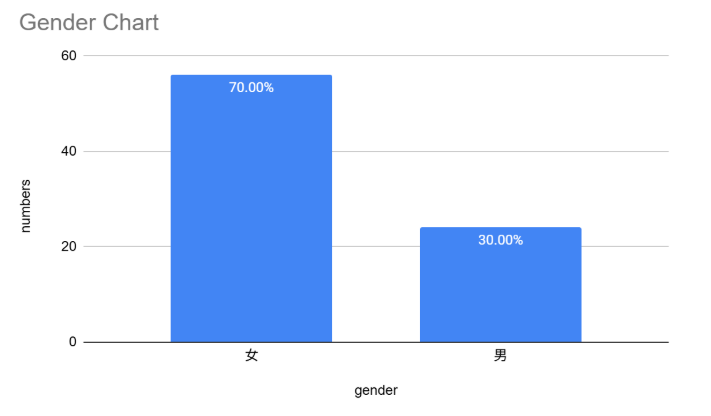
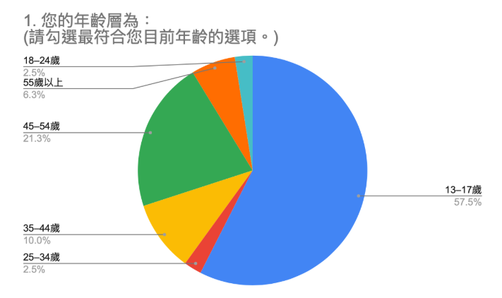
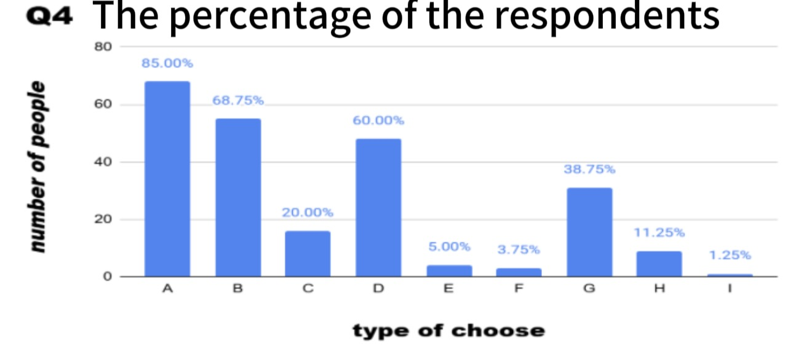

Will Chu
Will Chu
Data
In this section, I will introduce the gender and the age groups in our survey, so that we can show which gender answered more and show which age group answered the most.
Total Sample Size80 people answered our survey in total.
GenderIn total, there were 53 fe-males and 27 males, and women's willingness to answer were high.

13-17 age groups were 57.5%, 18-24 were 2.5%, 25-34 were 2.5%, 35-44% were 10%, 45-54 were 21.3% and 55 or more were 6.3%. These details showed that the 13-17 age group’s willingness were a lot higher.

Survey Question Results
Q1: 在過去兩年內，您是否記得曾看過有關動物收容所的廣告？ (請依您的記憶選擇「是」或「否」，不確定時請選擇最接近的答案。) ☐ 是 ☐ 否
We want to know if shelter ads are common to people or not. For Our question, our question types are single choice, including yes and no and is Categorical. I used pie chart because it’s easy to show two choices. Our answers details are most people chose 否, 70% and the least people chose 是, 30% We can tell from the pie chart that most people didn’t see the shelter’s ads before.

Q2:如果請您描述該廣告，您是否能夠向他人清楚說明內容？ (請根據您對該廣告的印象，判斷自己是否能清楚描述內容。) ☐ 是 ☐ 否
We want to know if people remembered it clearly or not, if not, then that means the ads were not memorable for normal people. This question is single-choice, you can only choose one answer between yes and no, and it's categorical question type, nothing to do with number. We used pie chart for this question because it’s easy to show two choices. Our answers details are most people chose the 否 the most, 76.3% People chose the 是 the least, 23.8%. So basically, looks like people don't care about ads.

Q3:請簡要描述廣告中讓您印象最深刻的一個元素: (請用一到兩句話描述讓您印象最深的部分，例如畫面、故事、音樂或某個細節。)
In this question I try to look for what kind of ads attract attention. (or what kinds of details or design in ads). This question is an open-ended question and it collect categorical data. We split the answer into different kinds and the analyze it. To show the resoults easily, we used pie chart, so we can see the result clearly. Our answers details are most popular option was no, they don't remember the ads. So we thinkpeople don't have any idea about this question because they didn't even remember the ads

Q4:當您看到動物收容所的廣告時，您認為應該最強調哪些資訊？（可複選） (可勾選一個或多個您認為重要的選項；若有其他想法，請填寫在「其他」。) ☐ A. 狗狗的資訊（例如：品種、年齡、個性等） ☐ B. 收容所的位置 ☐ C. 廣告的製作品質（畫面、剪輯等） ☐ D. 聯絡方式 ☐ E. 音樂 ☐ F. 與當前熱門話題的連結 ☐ G. 參與或領養的好處 ☐ H. 代言人或推薦者 ☐ I. 其他：________________________
For this question the exact question asked is “When you see an animal shelter advertisement, which
information do you think should be emphasized the most?".
The main goal is we want to know what people want to see in ads to let them spare time to care about it.
This question is multiple-selection
and the type of data is categorical.
It is not an open-ended question, so we don’t need to analyze it. to make people see the results more easily,
we are using the Bar chart. The reason I choose that is because the bar chart can see different types,
which is the first most choice.
A majority of respondents, accounting for 85%, selected Information about the dogs. People cared about dog
information in the advertisement.
Less of respondents, accounting for 1.25% selected Others.
So include all the results, we think people don't care about ads
